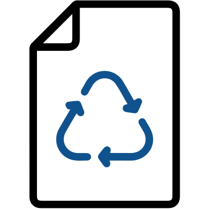
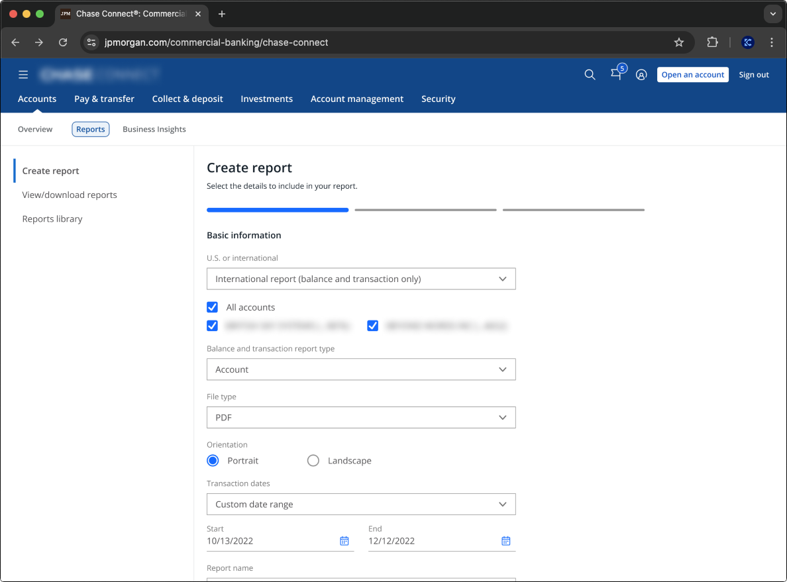
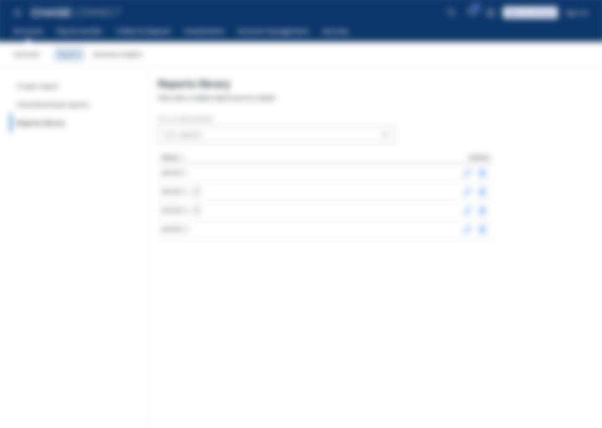
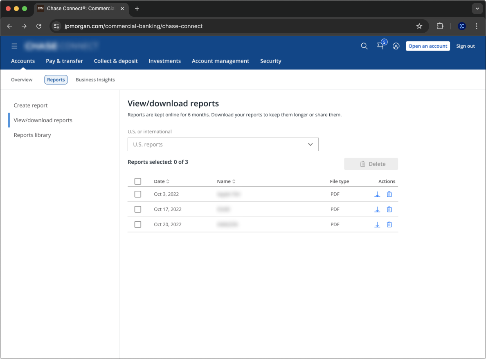
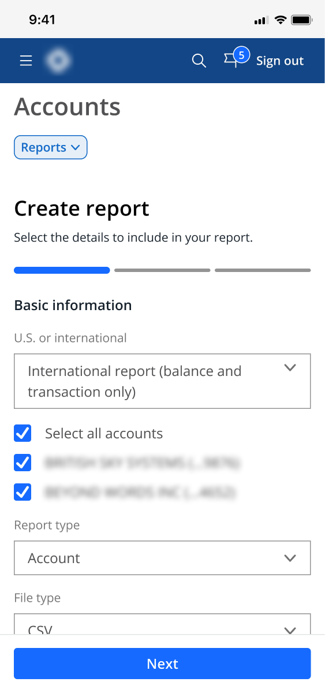
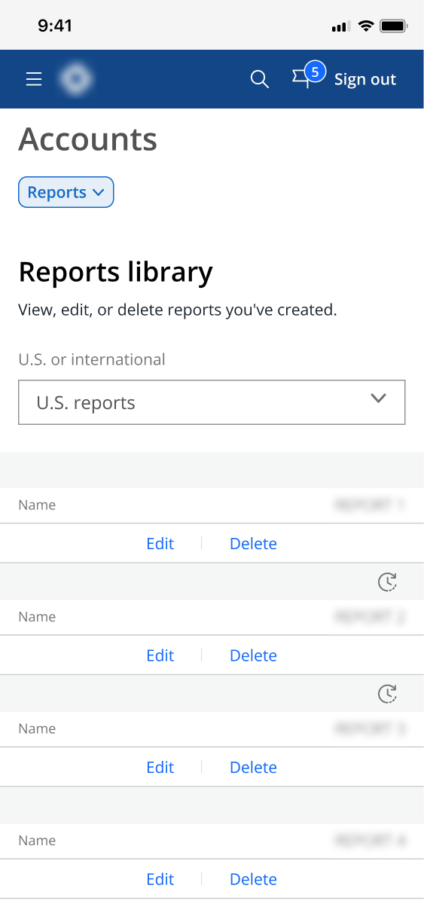
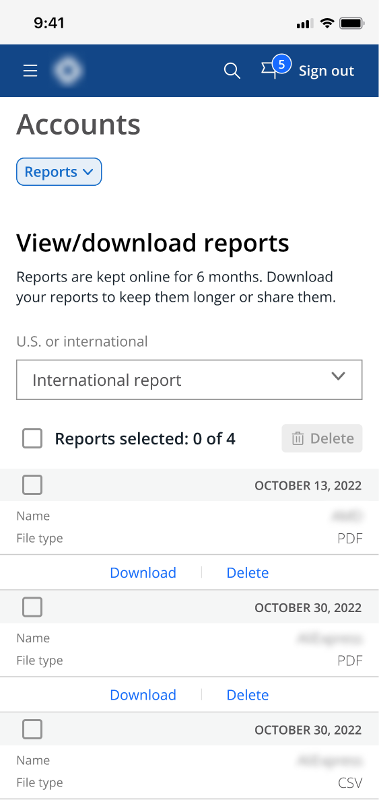

Platform Modularity Reports
Chase Connect’s reporting feature enables clients to generate balance and transaction reports for their accounts. With the introduction of Platform Modularity, clients who also use J.P. Morgan Access can now create Access reports directly within the Connect platform, streamlining workflows across both systems.
User & Business Needs
User: Be able to create Access reports within the Connect experience.
Business: Improve reports creation rate
Impact
Access report creation rate increased by 30% and Access report creation time reduced by 53%
Contribution
Lead designer and led the collaboration efforts with PMs and engineers

Problem
Emerging Middle Market (EMM) clients appreciate the simplicity and usability of Chase Connect. However, as their needs grow and they transition to J.P. Morgan Access for more advanced features, many experience frustration due to the platform’s complexity. Platform Modularity addresses this gap by unlocking key Access functionalities within the Connect experience. My role was to design the user experience that enables clients to create Access reports directly within Chase Connect—preserving the simplicity they value while meeting their evolving reporting needs
Challenge: Clients value the simplicity of Chase Connect, but often become frustrated when transitioning to J.P. Morgan Access, as its complexity can hinder usability despite offering more advanced features.
Process
I collaborated closely with product managers and engineers to align on key requirements and technical constraints. Then, I conducted user research and platform audits to identify usability gaps. Using these insights, I focused my design on simplifying the process of creating complex bank account reports, ensuring users can easily create Access reports in Connect.
- Platform Audit
- User Interview
- Information Architecture
- Design Takeaways
- Hi-Fi Wireframes
- Responsive Design
- Usability Testing
- Greenline
- Refinement
- Quality Assurance
- User Feedback
- Adoption Metrics
Discover
Define
Design
Develop
Deliver
Completed the whole process within 4 months.
Research
I began by analyzing the reporting workflows in both J.P. Morgan Access and Chase Connect to understand their respective strengths and limitations. From there, I conducted interviews with EMM clients to uncover how they currently use these features and the challenges they encounter, particularly when switching between systems.
Platform Audit
Analyzed reports creation process in both Connect and Access
User Interviews
Talked to 12 EMM clients and bankers who work with them
Synthesize
After my research findings, I formulated takeaways about how clients create their reports using what's available in Access and Connects, and identified the challenge to guide my design. Here are the design takeaways and HMW statement:
Design Takeaways
Simplify the Complexity
Simplify reports, so users would not need to rely on detailed instructions to use the module
Clear User Flows
Allow users to know what is available to them and what action to take next

Reuse Reports
Allow users to easily locate and reuse their favorite reports
Design Challenge
How might we streamline the report creation process that allows EMM clients to easily navigate through the available actions and reuse their favorite reports after they completed the process?
Solution
I redesigned the information architecture and proposed an integrated experience that allowed clients to switch between Connect and Access reports during the creation process, which streamlines the reporting flow between the two report types.
Create New Report
Complete a 3-step process in creating a report, which helps guide clients to fill out a report's basic information, what data to display and scheduling.

3-step process to create a report.
Report Library
Newly created report are stored in a library, which can be edited, by going through the same 3-step process, and deleted.

A library to store reports.
View and Download Reports
Once a report has ran on a recurring schedule or adhoc, it generates a report file, which is organized in a table where clients download or delete them.

Generated report files are stored for access.
Responsive Web Design
The reporting feature is responsive, so clients will still be able to access their reports through their phones if they are not at their desk.



Mobile screens of the reporting feature.
Confidential
Please contact me via kchengtoo@gmail.com for a portfolio review of all Merchant Restrictions work.